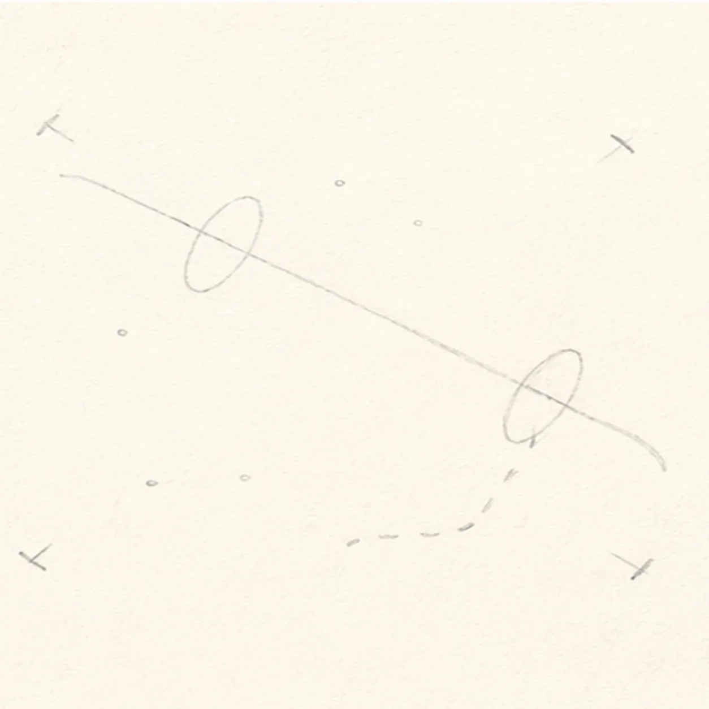
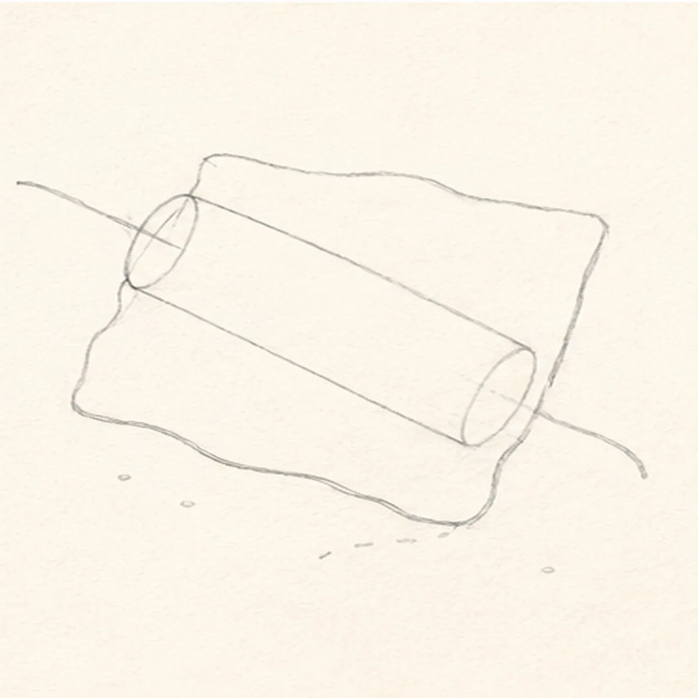
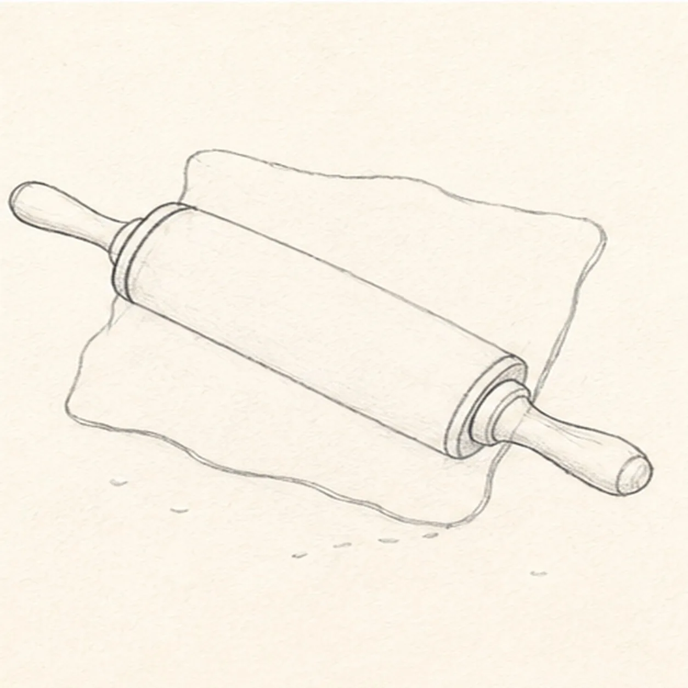
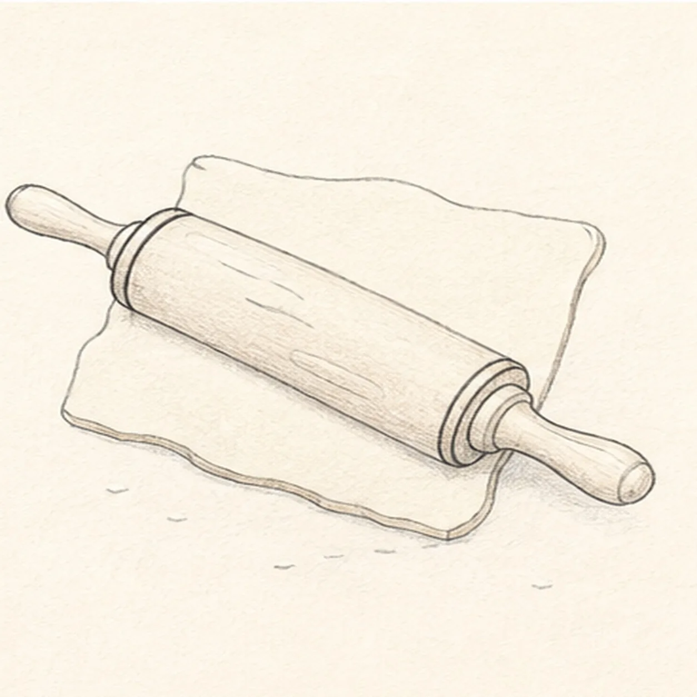
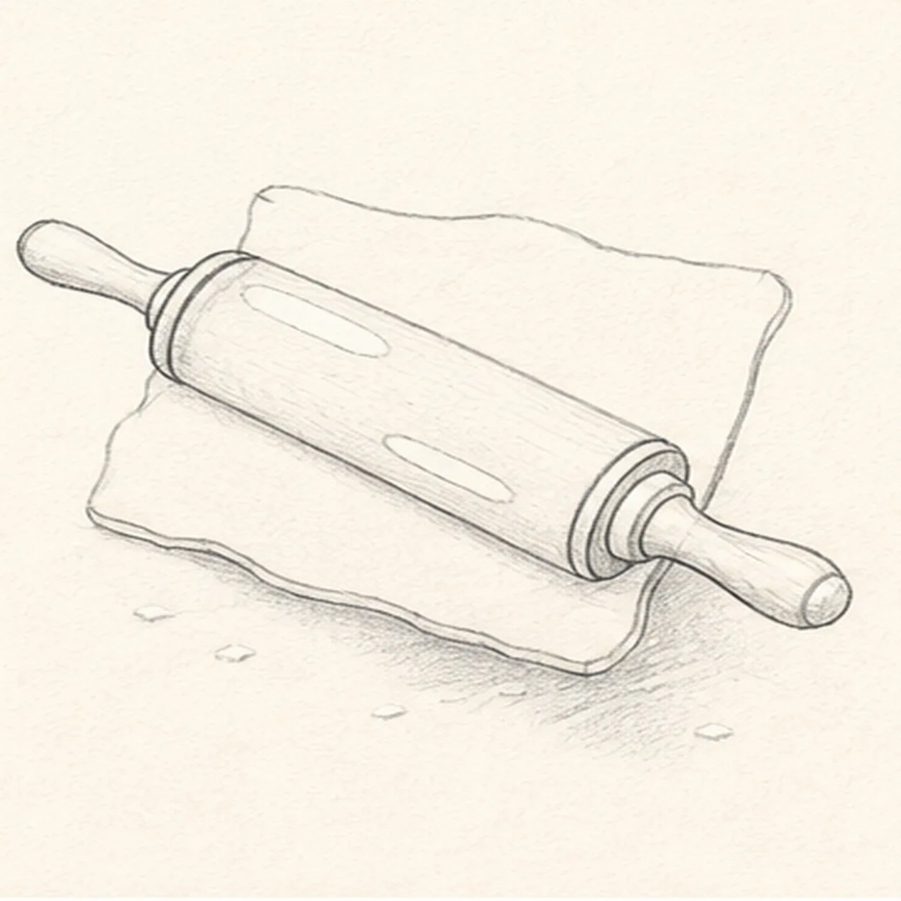
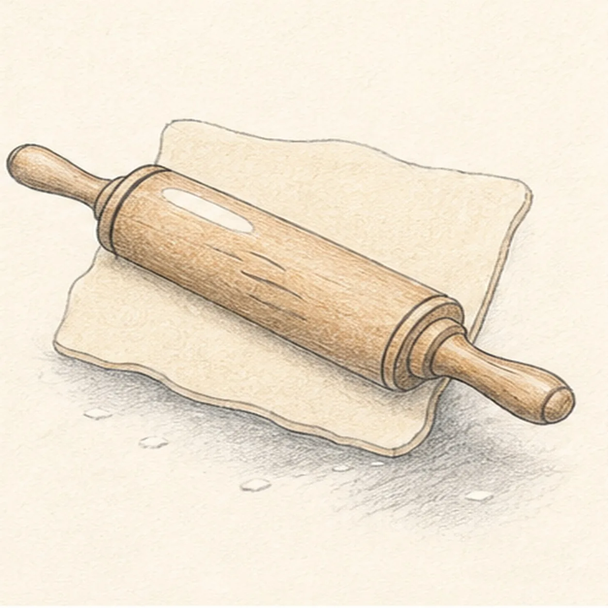
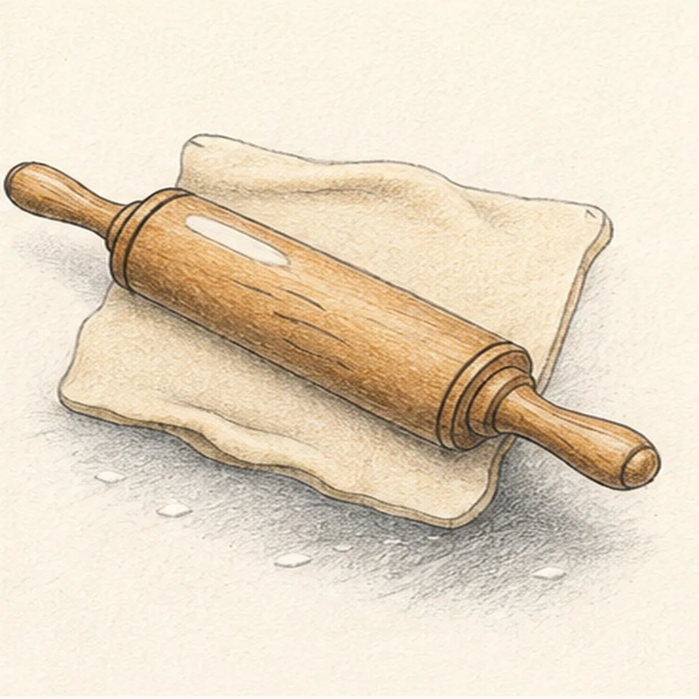

Pencil ready?
Let's draw a rolling pin
Treat this as one small practice round: build the subject lightly, notice the shapes, then darken only the lines that help the finished sketch.
-
01

Map the rolling pin and dough
Use pale HB to place one long diagonal axis, two barrel-end ellipses, exactly two open handle routes, four corner ticks for the pastry sheet, exactly four flour ticks, and one broken shadow route.
Sketch tip: Keep the first map sparse. The ellipses should sit perpendicular to one axis, and the four dough corners should stay disconnected until the next step.
-
02

Shape the barrel and pastry
Wrap the two ellipses with one cylindrical barrel, then connect one irregular pastry-sheet contour only around the reserved barrel footprint.
Sketch tip: Let the dough appear above and below the barrel, but stop its keeper edge at the overlap. Leave both handles as single pale routes for now.
-
03

Attach both handles
Wrap exactly two tapered handles and exactly two narrow collars onto the reserved barrel ends along the original diagonal axis.
Sketch tip: Center each handle on its route and attach it firmly through a collar. Compare their angles before adding any surface detail.
-
04

Add rings grain and dough edge
Clarify two barrel-end rings, one short dough-thickness edge, and exactly three curved wood-grain marks on the established forms.
Sketch tip: Curve each grain line with the barrel instead of drawing flat stripes. Keep the marks short enough that the cylinder remains readable.
-
05

Reserve highlights flour and shadow
Add exactly two open-paper wood highlights, turn the four placement ticks into exactly four small flour dashes, and establish the broken ground shadow.
Sketch tip: Keep one highlight on the barrel and one on a handle. Scatter the four flour dashes around the dough without letting them merge into the shadow.
-
06

Layer wood dough and shadow
Map directional graphite, honey-brown wood, warm-cream dough, pale flour, and cool gray inside the established shadow.
Sketch tip: Pull pencil strokes along the barrel axis and around the dough edges. Work around both highlights and keep the flour marks light.
-
07

Build cylindrical depth
Clarify established barrel shadows, collar accents, exactly two shallow dough folds, flour texture, graphite grain, and open-paper highlights without adding forms.
Sketch tip: Use the darkest value beneath the barrel and at both collars. Keep the two dough folds shallow so the pastry still reads as a flat rolled sheet.
-
08

Finish the rolling pin
Strengthen selected keeper contours and deepen only the same wood, dough, flour, folds, highlights, and broken shadow.
Sketch tip: Count one barrel, two handles, two collars, three grain marks, two highlights, four flour dashes, and two folds, then stop while the sketch still feels handmade.